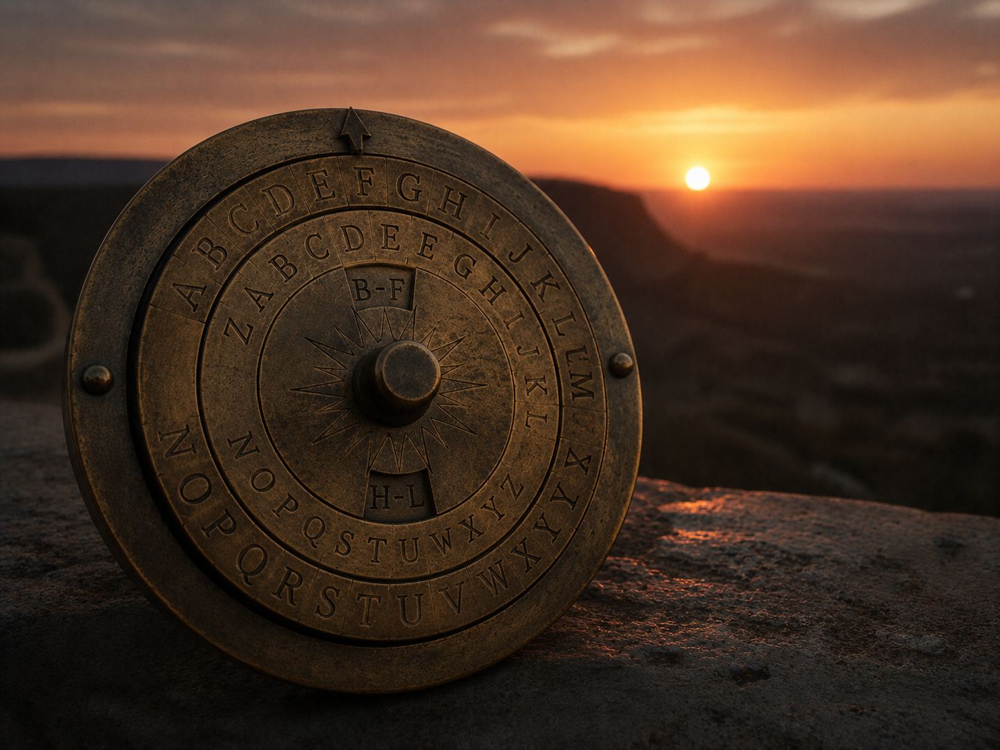

·································· · D E S C E N T · 36 / 40 · ··································

Almost out. The glass roof, lit from above.
On the other side: the page you started on.
It is about to step back into the light.
| | | | | | | | | | | | |daybreak